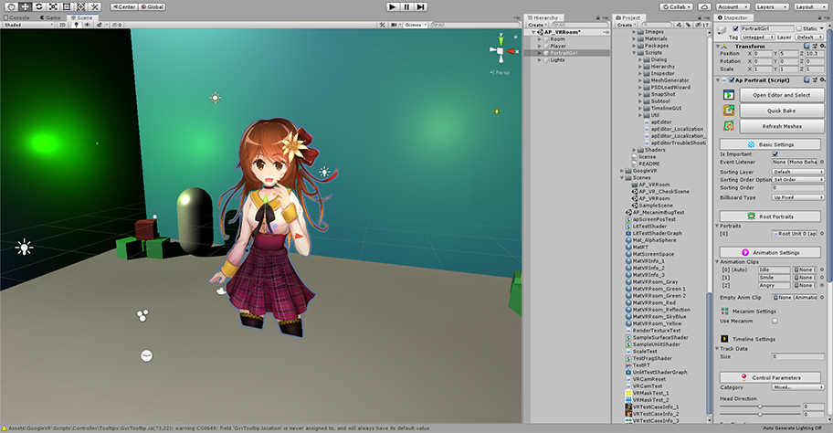
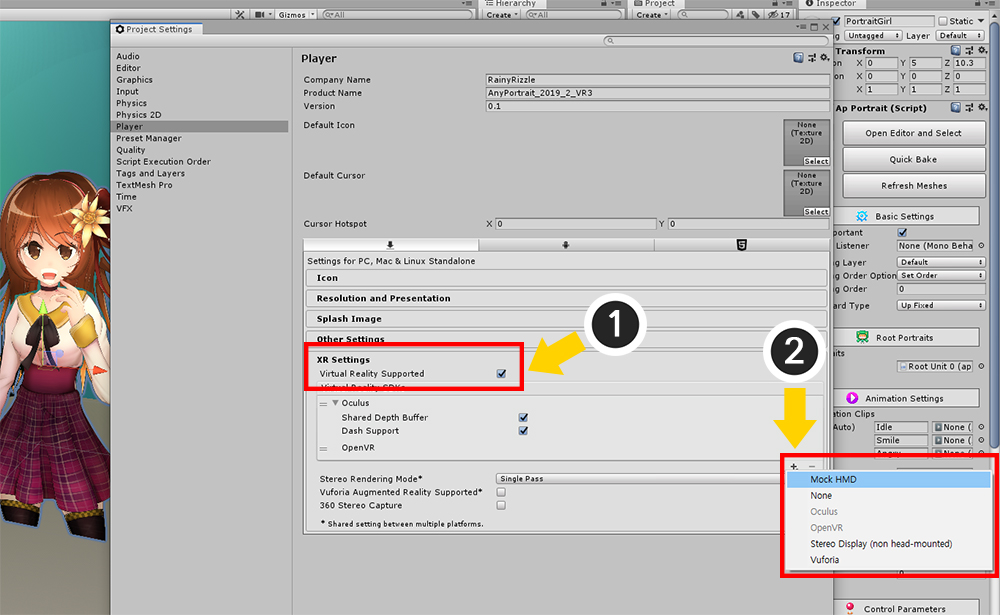
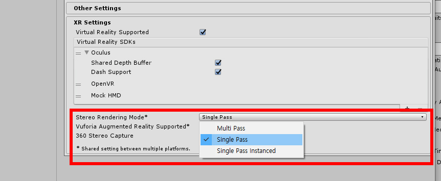
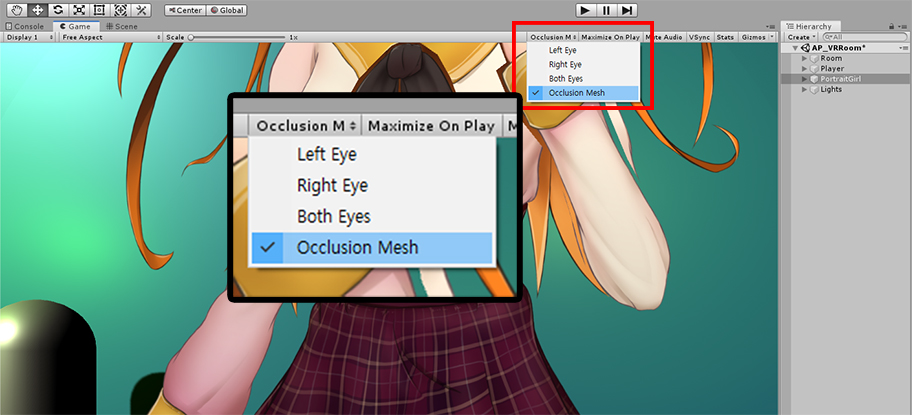
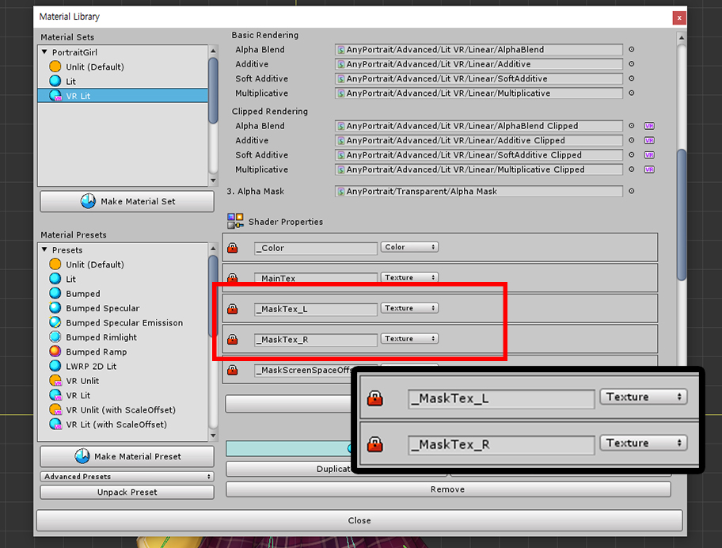
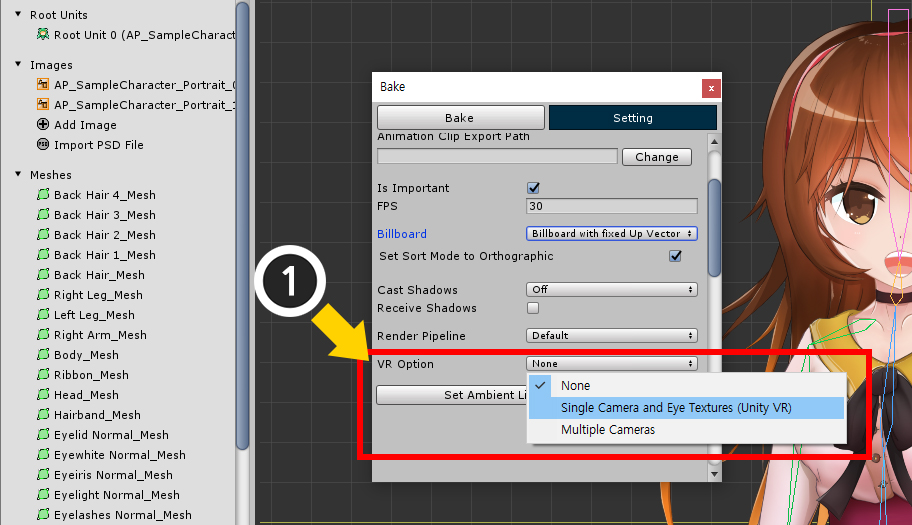
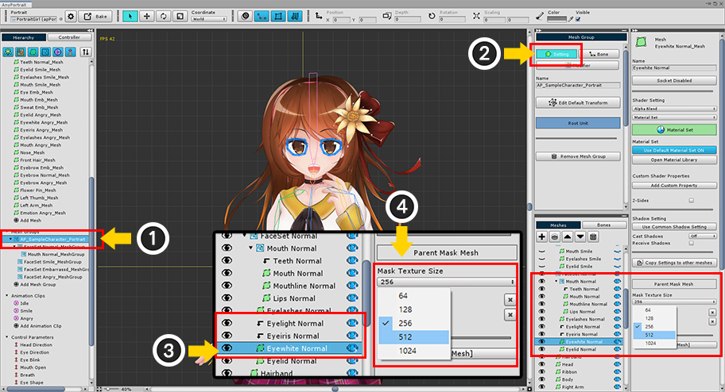
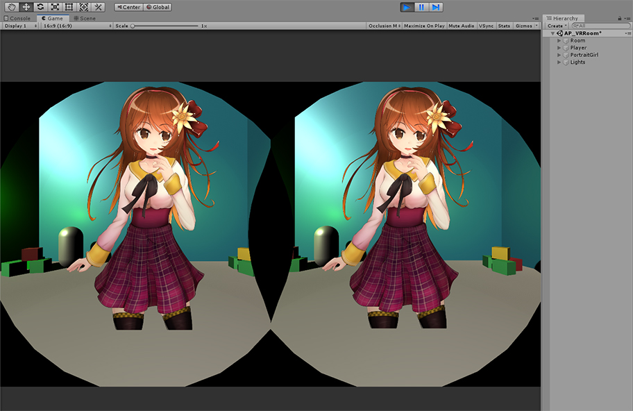
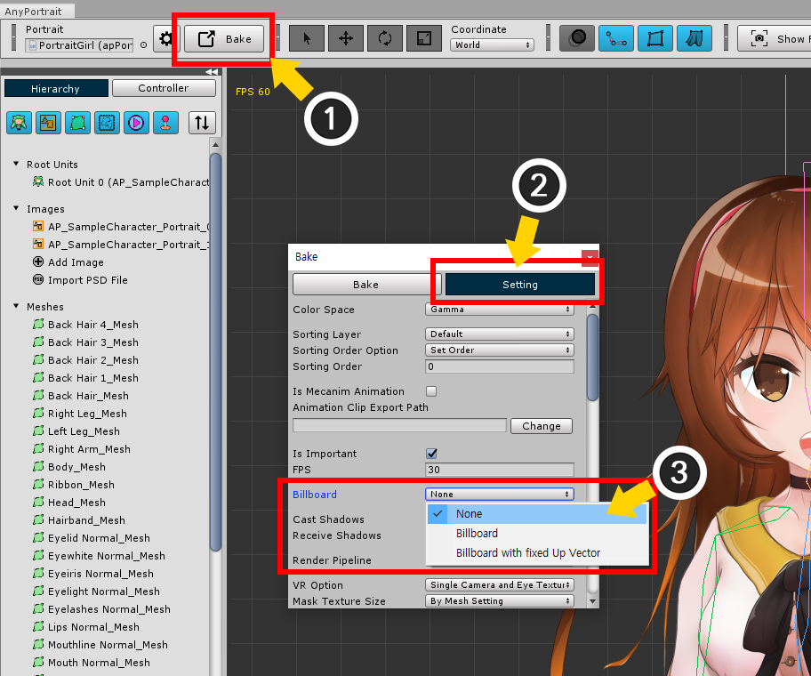
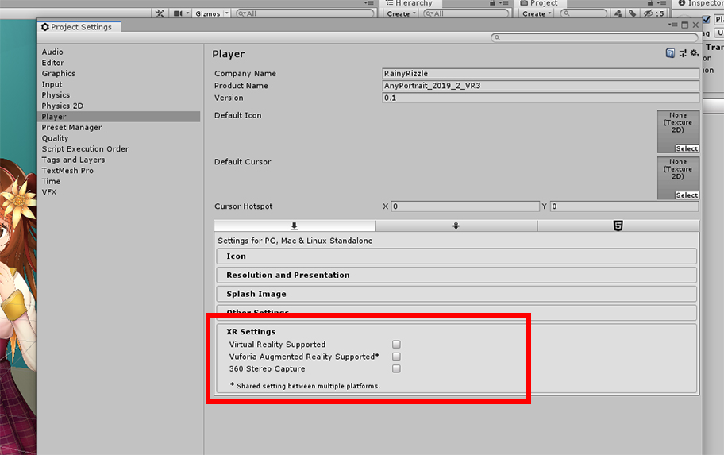

AnyPortrait > マニュアル > VRにビルド
VRにビルド
1.2.0
「VR（Virtual Reality）」とは、主に「HMD（Head-Mounted Display）」と呼ばれる機器を利用して、実感できるようにゲームを楽しむ技術です。
（広い意味でVRは、仮想現実を楽しむすべての技法と概念を含みますが、ここで、現在の市場のVRとHMDにのみ説明します。）
Unityも他のゲームエンジンと同様にVRをサポートするので、皆さんは、モバイル、PC、コンソールを対象にVRビルドを行うことができます。
AnyPortraitは2Dキャラクターを作成するエディタであるため、VRと多少距離があったことは事実です。
しかし、多くのユーザーの要望に応じてUnityのVRと連動する機能をv1.2.0からサポートします。
この機能を説明するに先立って、以下のリンクの説明を先にご覧ことをお勧めします。
VR機能説明ページ（ユニティ公式ページ）
マテリアルライブラリ
注意。
VRビルド方式は、Unityのバージョンによって少しずつ差があり、対象機器によっても違いがあるので、
開発環境に応じてAnyPortraitのVR機能が完全にサポートされないことがあります。
その場合は、ご使用になるUnityエンジンのバージョンとVR機器を含む発生した問題をお知らせいただければ助けをいたします。
このページは、「Unity 2019.2」を基準に作成され、バージョンによって多少の違いがある場合があります。
「VR材質」を適用して描画

VRのためのテストシーンを作成しました。
3Dオブジェクトを配置して、小さな部屋を作ったし、複数のPoint Lightを配置した状態です。
この空間にAnyPortraitで制作したキャラクターを中央位置しました。

「Project Settings > Player」を選択するか、「Build Settings > Player Settings」を開きます。
(1) 「XR Settings」の「Virtual Reality Supported」属性を入れます。
(2) 「+」ボタンを押して「VR環境」を追加して、テストのために「Mock HMD」も追加します。
（上のスクリーンショットは、PC環境での画面であり、モバイルやコンソールプラットフォームでは、他のビルドオプションが表示されます。）

「Stereo Rendering Mode」を選択します。
「Multi Pass」と「Single Pass」はVRレンダリング方式の内部的な違いがあります。
AnyPortraitは、上記の方法をすべてサポートしますが、この違いに応じて、実際に実行機器でテストをする必要があります。
特に、下の説明の中で「Scale Offset」問題について確認してみてください。

「Mock HMD」が登録されている状態では、VRレンダリング結果をエディタでプレビューすることができます。
「Gameタブ」で上記のように「Occlusion Mesh」を選択すると、仮想的にHMDに示すように、シミュレーションされた画面が表示されます。

ゲームを実行すると、概ね大きな問題なくレンダリングになるが、「クリッピングメッシュ」が正常に表示されていないことを見ることができます。
AnyPortraitがVRと関連して持つ最大の問題は、「クリッピングメッシュがVRの二つの画面で正常に出力される」です。
次の方法でこの問題を解決することができます。

AnyPortraitエディタを開きます。
(1) 「Material Library」ボタンを押します。
(2) 「VR Presets」を選択します。

(1) 「Unpack Preset」ボタンを押すと、選択された「VR Presets」がインストールされます。
このとき、「マテリアルライブラリを再起動しなければならない」というメッセージと一緒にマテリアルライブラリが終了します。
(2) 「マテリアルライブラリ」を再起動すると、4つの "VR用材料のプリセット」が追加されたことを見ることができます。
この「材質プリセット」は、次のとおりです。
- VR Unlit : 光のない環境で、元の画像の色をレンダリングするVRの材質プリセット
- VR Lit : 光がある環境では明暗が描画されるVRの材質プリセット
- VR Unlit / VR Lit (with ScaleOffset) : 「Single Pass」の環境で使用されるVRの材質プリセット
ここで注意する点があります。
「Scale Offset」が適用され材質は「Single Pass」環境で使用する必要がある材質プリセットです。
この材質のシェーダは、Unityのリファレンスに基づいて、「Scale Offset」という「Single Pass」の変数と一緒に、別の式が適用されました。
しかしながら、私達のテストでは、「Single Pass」の環境でも「Scale Offsetを使用していないこと」がむしろ正常レンダリングされました。
したがって、一度「Scale Offsetを使用していない材料」を利用してテストをして見て、もし問題が生じた場合に限り、「Scale Offsetが適用された材料」を利用してみてください。

(1) 「Make Material Set」ボタンを押します
(2) 現在のシーンにPoint Lightが配置されているので、「VR Litプリセット」を選択します。
(3) 「Select」ボタンを押します。

(1) 新たに生成された材料セットを選択します。

VRのマテリアルのセットを確認してみると、従来のマテリアルセットと他のものを見ることができます。
既存のマテリアルのセットは、「_MaskTex」プロパティを使用しているのに対し、VRのマテリアルのセットは、「_MaskTex_L」と 「_MaskTex_R」の2つのプロパティを使用します。
これは、それぞれ両眼に対応する二度のレンダリングのためにマスクテクスチャです。

(1) 「Default Material」ボタンを押して、デフォルトマテリアルに設定します。

3D空間にAnyPortraitで製作されたキャラクターを違和感なく配置させる良い方法は、ビルボードを使用することです。
（詳細については、「関連ページ」を参照してください。）
(1) 「Bake」ボタンを押します。
(2) 「Setting」タブを選択します。
(3) 「Billboard」オプションを変更します。 「Billboard」または「Billboard with fixed Up Vector」を選択します。

VRを設定するための最も重要なステップです。
(1) 「VR Option」を「Single Camera and Eye Textures（Unity VR）」に変更します。
このオプションは、UnityのVRビルドを利用する場合、必ず選択する必要があります。
このオプションの内容は、次のとおりです。
- None : VRビルドを使用せずに、キャラクターをレンダリングするカメラが1ある場合に使用されます。
- Single Camera and Eye Textures (Unity VR) : UnityのVRビルドを使用している場合は、設定する必要があります。
- Multiple Cameras : UnityのVRビルドを使用せずに、2つ以上のカメラを利用してレンダリングすると、利用されます。

VRオプションを変更すると、「Mask Texture Size」オプションが表示されます。
このオプションは、クリッピングマスクの画質と関連しています。
- By Mesh Setting
: メッシュグループの設定で指定されたメッシュの「クリッピングマスクのテクスチャサイズ "に応じてクリッピングマスクが作成されます。
メッシュの大きさに応じてクリッピングマスクのサイズを変更することができますので、最適化に役立ちます。
一般的なレンダリングよりもVRレンダリングの場合クリッピングマスクの画質が低下することがありますので、比較的大きな値のマスクテクスチャのサイズを利用します。
- By Eye Texture Setting
: VRの画質に関連する「Eye Textureのサイズ」をそのままクリッピングマスクのサイズとして使用します。
すべてのクリッピングマスクが画面サイズと同じようにマスクを生成するので、均一な画質が保証されます。
VRビルド環境、または実行機器によってEye Textureのサイズが多少小さく生成される場合には、画質が非常に低くなることがあります。
いくつかのオプションを使用してもしますが、追加の説明のために (2) ここで「By Mesh Setting」を選択しました。

「By Mesh Setting」を選択した場合、クリッピングマスクのテクスチャサイズを変更する必要があります。
VRは「クリッピングマスクの最適化」が処理されないため、テクスチャの解像度を増加させなければします。
(1) メッシュグループを選択します。
(2) 「Setting」タブを選択します。
(3) クリッピングマスクとなるメッシュを選択します。
(4) 「Mask Texture Size」の値を大きな値に変更します。

Bakeを実行します。

VR画面でも正常にレンダリングがされていることを見ることができます。
「Billboard」オプションを無効にしてレンダリング
場合によってビルボードを利用していない状態でVR空間にキャラクターを配置させる必要があります。
この時、最も問題となるのは「Z-Fighting」問題です。
多数のメッシュが狭い間隔で前後に配置されたAnyPortraitの構造上、カメラの角度が少し変わっても正常にレンダリングされていないからです。
この時「Sorting Group」を利用して、この問題を解決することができます。 （関連ページ）

まず、ビルボードのオプションをオフにしてみましょう。
(1) 「Bake」ボタンを押します。
(2) 「Setting」タブを選択します。
(3) 「Billboard」オプションを「None」に変更します。

(4) 「Sorting Order Option」を「Depth To Order」に変更します。
すべてのプロセスが完了したら、「Bake」を実行します。

Bakeをした後、Unityエディタを開きます。
(1) キャラクターを選択します。
(2) 「Sorting Group」コンポーネントを追加します。

ゲームを実行すると、ビルボードが適用されていない状態でも正常にレンダリングがされているキャラクターを見ることができます。
UnityのVR設定を使用せずにVR画面の作成
UnityのVR機能は強力ですが、他の方法でも、VR画面を作成することができます。
様々な代替方法の中で、「2つのカメラを利用する方法」が最も有用であると思われます。
2つ、またはそれ以上のカメラが配置されたときにもAnyPortraitは正常にレンダリングになるようにするオプションを提供しています。

「Player Settings」から「Virtual Reality Supported」を解除します。

既存の1つのカメラを「Left、Rightに対応する2つのカメラ」にコピーして作成します。

カメラの設定です。
「Viewport Rect」を上記のように変更して、描画領域を指定することができます。
その他の設定は同じです。

2つのカメラがそれぞれ左と右の領域にレンダリングをすることを見ることができます。
カメラの位置と角度を変更すると、実際の視野と同じ効果を出すことができます。

この方式は、UnityのVR機能とは異なるVRマテリアルを必要としません。
したがって、元のマテリアルに戻って戻す必要があります。
(1) AnyPortraitエディタを開いて、「Material Library」ボタンを押します。
(2) 元の「Litマテリアルセット」を選択します。 （または新たに作成したり、同じような他のマテリアルを選択します。）
(3) 「Default Material」ボタンを押して、デフォルトマテリアルに選択します。

(1) 「Bake」ボタンを押します。
(2) 「Setting」タブを選択します。
(3) 「VR Option」の値を「Multiple Cameras」に変更します。
このオプションは、多数のカメラでレンダリングをするほとんどの場合に効果的です。

ゲームを実行すると、2つのカメラでレンダリングをする場合にも、通常のレンダリングがされていることを見ることができます。
クリッピングマスクの解像度とVRと多数のカメラについて
AnyPortraitは「レンダリングテクスチャ（Render Texture）」を利用して、クリッピングマスク技法を実装します。
「レンダリングテクスチャの解像度」を上げると、品質が良くなりますが、ゲームの性能が低下します。
AnyPortraitは自主的に設計された方式を利用して、低解像度のクリッピングマスクもかなり高品質のレンダリング結果を示しています。
しかし、この品質の補正方法は、「1つのカメラ」の環境でのみ有効です。
したがって、その他のすべての場合には、従来よりも高解像度のクリッピングマスクを作成する必要があります。
これらの理由から、VRレンダリング環境では、ほとんどの場合、クリッピングマスクの品質が低下します。
クリッピングマスクが解像度に比べて高品質で補正されているかどうかは、次のとおりです。
1. 高品質で補正されている場合
- 1つのOrthographic方式のカメラのみ存在
- 1つのPerspective方式のカメラがある場合、ビルボードがオンの場合
- 多数のカメラが同じ位置、同じ方向を向いて、みんなOrthographicであり、キャラクターのVR OptionがMultiple Camerasである場合
2. 補正がされていない場合
- ユニティVRオプションがオンの状態
- 1の条件を満たしていないすべての場合